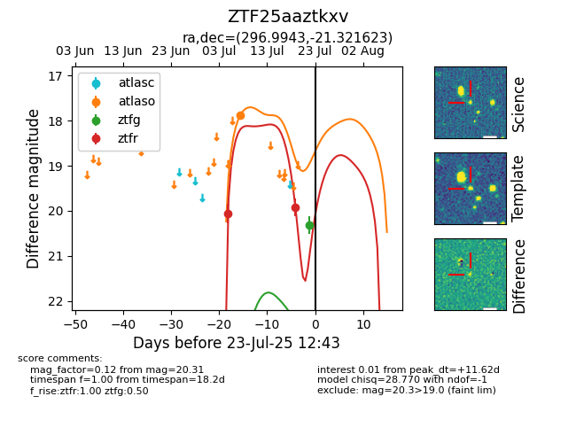

Target ZTF25aaztkxv at 2025-07-23 11:52, see:
FINK: fink-portal.org/ZTF25aaztkxv
Lasair: lasair-ztf.lsst.ac.uk/objects/ZTF25aaztkxv
ALeRCE: alerce.online/object/ZTF25aaztkxv
alt names
ZTF25aaztkxv (ztf,fink)
coordinates:
equatorial (ra, dec) = (296.9943,-21.32162)
galactic (l, b) = (19.2524,-21.60833)
photometry
last atlaso=17.88, ztfg=20.31, ztfr=19.93
1 atlaso, 1 ztfg, 2 ztfr detections
